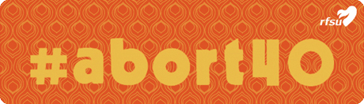

Vad kan du om svensk aborträtt?
Sverige har haft fri abort sedan 1974. Hösten 2014 berättade RFSU och RFSUs aborträttsnätverk historien om vägen mot fri abort. Den 1 januari 2015 högtidlighölls det att det var 40 år sedan Sveriges lagstiftning om fri abort trädde i kraft. Det var en berättelse som innehöll nedslag i Sveriges:
- fascinerande
- rika
- hoppfulla
, men bitvis också
- mycket mörka
sexualpolitiska historia.
Frågesporten är en komprimerad sammanfattning av vägen mot fri abort.
